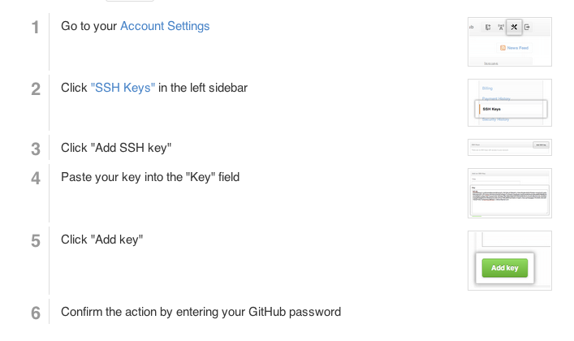

Intro to Git and Github Workflows
Shannon Bertucci
shannon.io
Welcome!
Tell us about yourself.
- Who are you?
- Where are you in the program?
- What track are you in ?
- How comfortable do you feel with git?
- What is your github username?
- What do you hope to get out of the class?
What we will cover today
- What is version control and why should we care?
- Basics of git -- the essential commands
- "Gitting" social with GitHub
What is version control?
Version control allows you (and your team) to do two powerful things
Collaborate
Create anything with other people, from academic papers to entire websites and applications.
Track and revert changes
Mistakes happen. Wouldn't it be nice if you could see the changes that have been made and go "back in time" to fix something that went wrong?
Working without Version Control

The Horror!
Working with Version Control

Rainbows and bunny rabbits!
Brief history of Version Control
1990s -- CVS (Concurrent Version Systems)
2000s -- SVN (Apache Subversion)
2005 -- Git (well, Git)
Version Control Types
Centralized Version Control
Examples: CVS, SVN
One central server, each client (person) checks out and merges changes to main server
Distributed Version Control
Examples: Git, Mercurial
Each client (person) has a local repository, which they can then reconcile with the main server.
Version Control Velocity
How the popularity of different distributed version control systems have changed since 2010.
Intro to Git
Goals of Git Design
- Fast -- add to your team and code base quickly
- Distributed (see slide above)
- Each commit has a corresponding hash (track changes from everyone)
- Everyone has a local copy of the history
Installation and Setup
Make sure you have a text editor such as Atom or Sublime
Install git
Installation and Setup
Setup ssh keys
$ cd ~/.ssh
$ ssh-keygen -t rsa -C "your_email@example.com"
# Generating public/private rsa key pair.
# Enter file in which to save the key (/Users/you/.ssh/id_rsa): [Press enter]
Enter passphrase (empty for no passphrase): [Type a passphrase]
# Enter same passphrase again: [Type passphrase again]
Installation and Setup
Get SSH Key
Your identification has been saved in /Users/you/.ssh/id_rsa.
# Your public key has been saved in /Users/you/.ssh/id_rsa.pub.
# The key fingerprint is:
# 01:0f:f4:3b:ca:85:d6:17:a1:7d:f0:68:9d:f0:a2:db your_email@example.com
Installation and Setup
Add SSH Key to Github
Installation and Setup
Setup name and email in gitconfig
$ git config --global user.name "Your Name Here"
# Sets the default name for git to use when you commit
$ git config --global user.email "your_email@example.com"
# Sets the default email for git to use when you commit
$ git config --list
Your first Local Repository
Go to home directory
cd ~/
OR
cd Users\username
Create a "working directory"
mkdir my-first-repo
cd my-first-repo
Initialize repository with Git
git init
git status
Add files
Create a new hello_world.txt file in your new folder
Check repo status
git status
Tell Git to track our new file
git add hello_world.txt
git status
File is now tracked by Git
Changes and commits
Open hello_world.txt and add some more text
git status
Stage and commit the change
git add hello_world.txt
git commit -m "First commit. Added hello world to repository."
What did we just do??
How is this all different than just saving a file?
- When we add a new file, we tell Git to add the file to the repository to be tracked
- When we stage an existing file (also with the keyword 'add'), we are telling Git to track the current state of our file
- A commit saves changes made to a file, not the file as a whole. The commit will have a 'hash' so we can track which changes were committed when and by whom.
Look at our progress
git log
commit [HASH HERE]
Author: Your name
Date: [DATE HERE]
First commit. Added hello world to repository.
Look at our progress, visually
gitk
GitHub
Create your first repository

GitHub
Create your first repository
GitHub
ReadME
While a README isn't a required part of a GitHub repository, it is a very good idea to have one. READMEs are a great place to describe your project or add some documentation such as how to install or use your project. You might want to include contact information - if your project becomes popular people will want to help you out.
GitHub
Get Local Repository of GitHub Repo
cd ../ # Back in root directory
mkdir hello-github
cd hello-github
git init
git remote add origin git@github.com:username/NAME-OF-REPO
git pull origin master
GitHub
Push to GitHub Repo
Edit the ReadMe file
git add README
git commit -m "Updating readme file"
git push origin master
Go look at your github repo online
GitHub
Pulling from remote repository
If you are working with a team, you want to make sure that you have everyone's changes before pushing your changes to the GitHub repo
# Commit local changes
git commit -m "My latest commit"
# Pull changes other people have made
git pull origin master
# Fix any conflicts (see merge conflicts above) and commit
git commit -m "Fixing merging conflicts"
# push local changes to GitHub
git push origin master
Nobody's Perfect
Undoing local changes
If you haven't committed yet
Open hello_world.txt and add some new text
change hello_world.txt
git checkout hello_world.txt
Look at hello_world.txt. Your changes are gone.
Nobody's Perfect
Undoing staged changes
Open hello_world.txt and add some new text
git add hello_world.txt
git reset HEAD hello_world.txt
git checkout hello_world.txt
Look at hello_world.txt. Your changes are gone.
Nobody's Perfect
Undoing staged changes
Open hello_world.txt and add some new text
git add hello_world.txt
git commit -am "Changing and committing some lines"
git log --pretty=oneline
git revert [HASH]
Look at hello_world.txt. Your changes are gone.
Nobody's Perfect
Remove a file from staging
Create new file my_new_file.txt
git add my_new_file.txt
git reset my_new_file.txt
Nobody's Perfect
Delete a file
Create new file my_other_file.txt
git add my_other_file.txt
Manually delete your file
git rm my_other_file.txt
Branching
- Develop different code on the same base
- Conduct exploratory work without affecting the work on master branch
- Incorporate changes to your master branch only when you are ready
Branching
Clone our Project Repo
git clone git@github.com:shannonio/cheese-and-wine.git
cd cheese-and-wine
Branching
Create a new branch called version2
git checkout -b YOURNAMEHERE
Open and edit the index.html in your text editor
git add index.html
git commit -m "Adding my clever changes"
git push origin YOURNAMEHERE -u
Branching
Viewing branches
See all LOCAL branches. Branch with * is active
git branch
See all REMOTE branches. Branch with * is active
git branch -r
Branching
Switching branches
Switch to master and look at index.html
git checkout master
Switch to your branch and look at index.html
git checkout YOURNAMEHERE
Branching
Switching branches
git checkout master
Make a change to index.html, do not add or commit
git checkout YOURNAMEHERE
What Happened?
Pull Requests
- Help you and your team manage large chunks of code being merged into master
- Once a pull request is sent, interested parties can review the set of changes, discuss potential modifications, and even push follow-up commits if necessary.
Starting a pull request

Previewing and sending pull request

Managing pull requests
Pick a neighbor and review their pull request by clicking on the title
Merging pull requests
After you've reviewed the pull request, use the github UI to merge the pull request
OR
You can merge the pull request on the command line
git checkout master
git merge NEIGHBORSNAME
git pull -r
git push
Reconcile your local repo with the Remote repo
Update your list of remote branches
git branch -r
git fetch
git branch -r
Update your local commit history (Pull the remote changes)
git checkout master
git log
git pull -r
git log
GitHub
- Launched in 2008
- Leader in Social Coding
- GitHub is a commercial site that allows users to host Git repositories publicly and privately
- Open source projects host or mirror their repositories on GitHub
- Post your own code for others to use or contribute to
- Use and learn from the code in other people's repositories